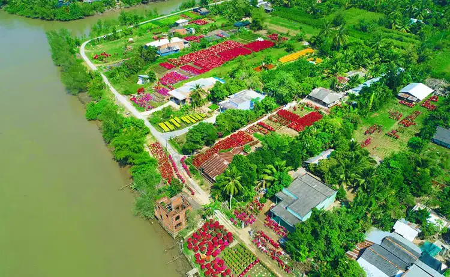
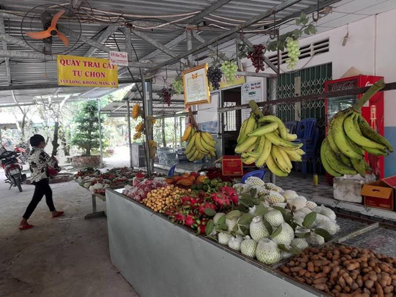
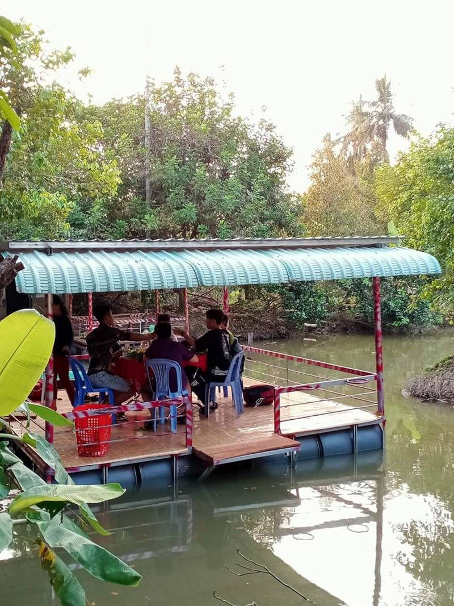
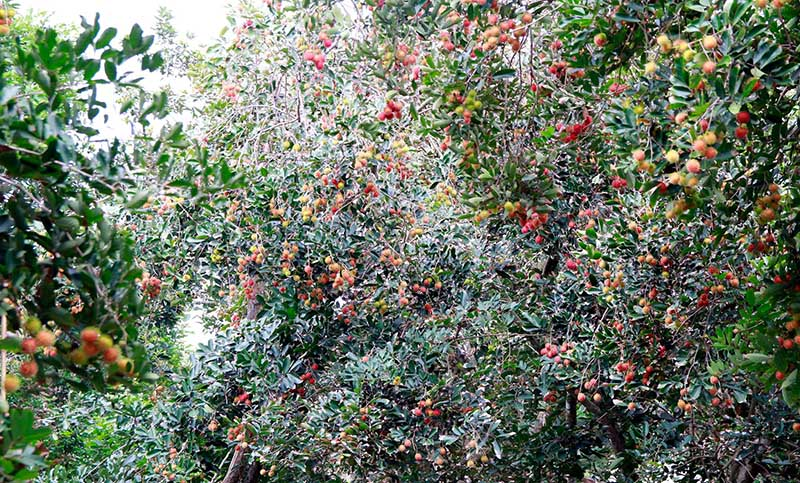
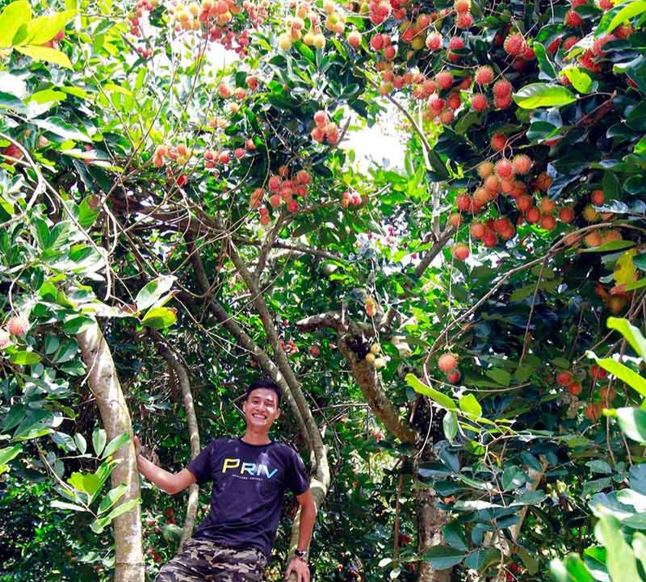
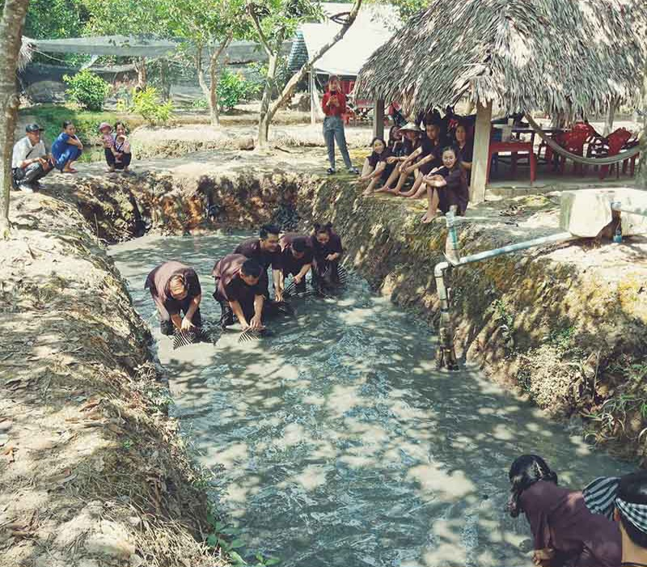
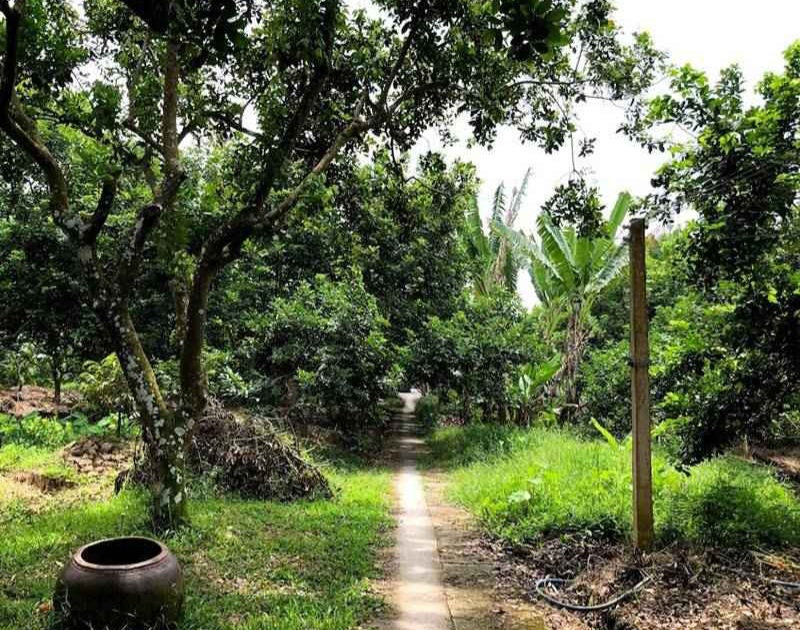
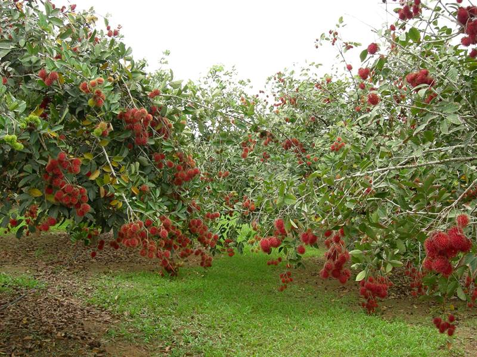

Vườn trái cây Cái Mơn
Vườn trái cây Cái Mơn nằm ở xã Vĩnh Thành, huyện Chợ Lách, tỉnh Bến Tre, là một trong những vựa trái cây lớn và nổi tiếng nhất của miền Tây Nam Bộ. Nơi đây sở hữu vùng đất phù sa màu mỡ, khí hậu ôn hòa cùng hệ thống kênh rạch chằng chịt, tạo điều kiện lý tưởng cho nhiều loại cây ăn trái phát triển quanh năm.
Đến với Cái Mơn, du khách sẽ được đắm mình trong không gian xanh mát của những vườn cây trĩu quả, tận hưởng hương vị ngọt lành của các loại trái cây đặc sản như sầu riêng béo ngậy, chôm chôm đỏ rực mọng nước, măng cụt thơm ngon, bưởi da xanh mọng nước và dừa xiêm mát lạnh.
Không chỉ là nơi thưởng thức trái cây tươi ngon, Cái Mơn còn mang đến cho du khách những trải nghiệm thú vị như tham quan vườn cây, tự tay hái trái chín, thưởng thức đặc sản miệt vườn và tham gia các hoạt động dân dã như tát mương bắt cá, chèo xuồng ba lá trên kênh rạch. Đặc biệt, vào mùa trái cây chín rộ từ tháng 5 đến tháng 8 hàng năm, nơi đây trở thành điểm đến lý tưởng cho những ai muốn khám phá vẻ đẹp trù phú của vùng đất Nam Bộ.
Ngoài ra, du khách còn có cơ hội tham quan làng nghề truyền thống, chợ nổi Cái Mơn và mua những đặc sản như kẹo dừa, mứt trái cây hay cây giống về làm quà. Vườn trái cây Cái Mơn không chỉ là điểm đến để thưởng ngoạn mà còn là nơi lưu giữ những giá trị văn hóa và nét đẹp bình dị của miền Tây sông nước.
Vườn Trái Cây Bảo Thạch
Nằm giữa lòng vùng đất trù phú của miền Tây Nam Bộ, Vườn Trái Cây Bảo Thạch tại Bến Tre là điểm đến lý tưởng dành cho những ai yêu thích thiên nhiên và mong muốn trải nghiệm không gian xanh mát, yên bình. Được bao phủ bởi hệ thống kênh rạch chằng chịt và phù sa màu mỡ từ dòng sông Tiền, vườn trái cây Bảo Thạch nổi bật với sự đa dạng của các loại trái cây đặc sản miền Tây như sầu riêng, măng cụt, chôm chôm, dừa xiêm, bưởi da xanh và nhãn lồng ngọt lịm.
Đến với Bảo Thạch, du khách không chỉ được thưởng thức trái cây tươi ngon ngay tại vườn mà còn có cơ hội tìm hiểu quy trình trồng trọt, chăm sóc cây trồng theo phương pháp nông nghiệp sạch, thân thiện với môi trường. Không gian vườn rộng rãi, thoáng đãng cùng những lối đi rợp bóng cây xanh sẽ mang lại cảm giác thư giãn tuyệt vời, thích hợp cho các chuyến dã ngoại gia đình hoặc những buổi tham quan, học tập trải nghiệm thực tế.
Ngoài ra, Vườn Bảo Thạch còn tổ chức các hoạt động thú vị như chèo xuồng len lỏi qua những con rạch nhỏ, tham gia thu hoạch trái cây cùng nông dân, hay thưởng thức các món ăn đặc sản đậm chất miền Tây như cá tai tượng chiên xù, bánh xèo củ hủ dừa, gỏi tôm sông tươi ngon.
Với sự kết hợp giữa vẻ đẹp thiên nhiên, hương vị trái cây tươi ngon và những trải nghiệm dân dã gần gũi, Vườn Trái Cây Bảo Thạch chắc chắn sẽ mang đến cho bạn những kỷ niệm đáng nhớ khi ghé thăm vùng đất Bến Tre xinh đẹp.
Vườn Trái Cây Quê Ta
Vườn Trái Cây Quê Ta là điểm dừng chân lý tưởng dành cho những ai yêu thích thiên nhiên và muốn tận hưởng bầu không khí trong lành, mát mẻ của vùng sông nước miền Tây. Nằm giữa lòng Bến Tre – vùng đất nổi tiếng với những hàng dừa xanh ngát và hệ thống kênh rạch chằng chịt – vườn trái cây không chỉ là nơi hội tụ của những loại quả đặc sản trứ danh mà còn là không gian trải nghiệm văn hóa miệt vườn đặc sắc.
Bước chân vào Vườn Trái Cây Quê Ta, du khách sẽ bị cuốn hút bởi khung cảnh xanh mướt trải dài với những tán cây rợp bóng, các loại trái cây chín mọng đung đưa trong làn gió mát. Tại đây, bạn có thể thỏa sức khám phá những vườn chôm chôm đỏ rực khi vào mùa, những cây sầu riêng sai trĩu quả tỏa hương thơm nức, hay những giàn măng cụt với lớp vỏ tím sẫm, căng mọng. Không chỉ dừng lại ở việc ngắm nhìn, du khách còn có thể tự tay hái trái cây trực tiếp tại vườn, thưởng thức hương vị tươi ngon ngay tại chỗ – điều mà không nơi nào có thể mang lại trọn vẹn cảm giác thú vị như thế.
Không gian yên bình của vườn còn là nơi lý tưởng để thư giãn, tạm gác lại những ồn ào và lo toan của cuộc sống thường nhật. Ngoài việc thưởng thức trái cây, du khách có thể tham gia vào các hoạt động đậm chất miền Tây như chèo xuồng ba lá len lỏi qua những con rạch nhỏ, câu cá, tham gia các trò chơi dân gian, hay thưởng thức những món ăn đặc sản địa phương như cá lóc nướng trui, bánh xèo miền Tây, gỏi củ hủ dừa, và các loại nước giải khát mát lạnh làm từ dừa tươi.
Vườn Trái Cây Quê Ta không chỉ là điểm du lịch sinh thái mà còn là nơi để gắn kết gia đình, bạn bè thông qua những khoảnh khắc vui chơi, cười đùa và tận hưởng sự gần gũi với thiên nhiên. Đó là hành trình đưa bạn trở về với những giá trị giản dị nhưng đầy ý nghĩa của cuộc sống – nơi con người hòa mình vào thiên nhiên, cảm nhận sự bình yên và tươi đẹp của quê hương.
Hãy đến với Vườn Trái Cây Quê Ta để cảm nhận trọn vẹn hương vị của miền Tây sông nước, nơi mỗi trái cây, mỗi con người đều mang trong mình những câu chuyện thú vị và những ký ức khó quên.
Vườn Trái Cây Ba Ngói
Tọa lạc tại vùng đất cù lao xanh tươi của Bến Tre, Vườn Trái Cây Ba Ngói là điểm đến lý tưởng dành cho những ai yêu thích không gian miệt vườn đậm chất Nam Bộ. Được thiên nhiên ưu ái với khí hậu ôn hòa, đất đai màu mỡ cùng hệ thống kênh rạch chằng chịt, Ba Ngói nổi bật với những vườn cây trĩu quả quanh năm, mang đến sự phong phú về chủng loại và hương vị.
Đến với Ba Ngói, du khách sẽ được chiêm ngưỡng và thưởng thức hàng loạt các loại trái cây đặc sản như chôm chôm đỏ mọng, sầu riêng béo ngậy, măng cụt ngọt thanh, dừa xiêm mát lạnh và bưởi da xanh căng mọng. Điểm đặc biệt của vườn là cách chăm sóc cây trồng hoàn toàn tự nhiên, không sử dụng hóa chất độc hại, đảm bảo an toàn và giữ được hương vị nguyên bản của từng loại quả.
Không chỉ dừng lại ở việc thưởng thức trái cây tươi ngon, du khách còn có cơ hội tham gia các hoạt động trải nghiệm thú vị như:
-Tự tay hái trái cây và tìm hiểu quy trình chăm sóc, thu hoạch của người nông dân.
-Chèo xuồng trên những con rạch nhỏ, len lỏi qua những tán dừa xanh mát, cảm nhận trọn vẹn vẻ đẹp sông nước miền Tây.
-Thưởng thức ẩm thực miệt vườn với các món ăn dân dã như cá lóc nướng trui, gỏi củ hủ dừa, bánh xèo miền Tây, kèm theo nước dừa tươi mát lành.
Với không gian xanh mát, không khí trong lành và những trải nghiệm chân thực về cuộc sống nông thôn miền Tây, Vườn Trái Cây Ba Ngói không chỉ là nơi thư giãn lý tưởng mà còn là dịp để bạn khám phá nét đẹp văn hóa sông nước đặc trưng của vùng đất Bến Tre. Đây chắc chắn sẽ là điểm dừng chân đáng nhớ cho mọi du khách khi ghé thăm miền Tây Nam Bộ.